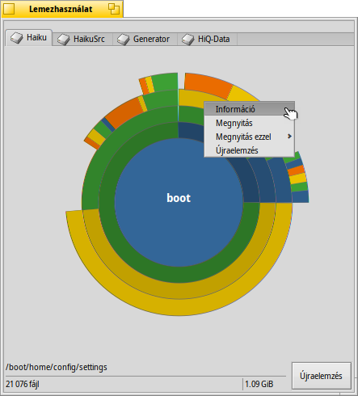

Magyar
Magyar Català
Català Deutsch
Deutsch English
English Español
Español Français
Français Italiano
Italiano Polski
Polski Português
Português Português (Brazil)
Português (Brazil) Română
Română Slovenčina
Slovenčina Suomi
Suomi Svenska
Svenska 中文 ［中文］
中文 ［中文］ Русский
Русский Українська
Українська 日本語
日本語 Lemezhasználat (DiskUsage)
Lemezhasználat (DiskUsage)
| Asztalsáv: | ||
| Útvonal: | /boot/system/apps/DiskUsage | |
| Bellítások: | ~/config/settings/DiskUsage |
A program grafikonon jeleníti meg a lemez kihasználtságát.
Ez egy remek program, ami választ adhat a kérdésre: "Hová tűnt a szabad hely a gépen?".
Indítás után a program csupán egy üres ablakot jelenít meg, amiben az összes csatolt lemez külön fülön jelenik meg. Ekkor csak ki kell választanunk azt a lemezt, amit elemezni szeretnénk, majd az gombra kattintva a program megvizsgálja azt. Nagyobb méretű lemezek esetében ez hosszabb időt vehet igénybe... Mialatt várakozunk, nyugodtan navigálhatunk egy másik lemezen, vagy azt is elemezhetjük.
Nem ajánlott azonban sok elemzést egyszerre elindítani azonos fizikai lemezen, ugyanis ez jelentősen megnövelheti a várakozási időt.

A koncentrikus körök jelképezik a különböző szinteket a fájrendszer szerkezetében. A felső képen a középső kör jelzi a /boot/home mappát. A gyűrű minden egyes szelete közvetlenül a körön kívül egy fájl vagy mappa a /boot/home mappában. Minden egyes szelet egy szinttel mélyebbre visz minket a fájlrendszerben. Az ablakot lehet, hogy át kell méretezni, ha nagyon mélyre akarunk menni.
- Ha az adott fájl vagy mappa méretének megfelelő körcikk 2°-nál kisebb, akkor az nem jelenik meg.
- A mappáknál megjelenített fájlok száma tartalmazza az almappákban lévő fájlokat is. Továbbá a mappák is fájlnak számítanak.
- Azonban a program figyelmen kívül hagyja a hivatkozásokat.
Ha az egeret egy szelet fölé mozgatjuk, akkor annak információi megjelennek az állapotsorban.
Jobb gombbal kattitnva egy szeleten kapunk egy menüt: , (a Nyomkövetőben), (egy használható programmal) és .
A bal gombbal kattintva a fájl/mappa középre kerül.
A középső körön pedig bal gomb hatására egy szinttel fejjebb lépünk.
A program ablakából bárhová dobhatunk fájlt vagy mappát, akár egy programba, akár az Asztalra, vagy a Nyomkövetőbe. Ugyanakkor a program ablakába dobva egy fájlt vagy mappát azonnal oda ugrik a grafikon, vagyis az kerül a kör közepébe.
A Nyomkövető kiegészítői közül kiválasztva a Lemezhasználatot a program a jelenlegi mappát veszi alapul induláskor.